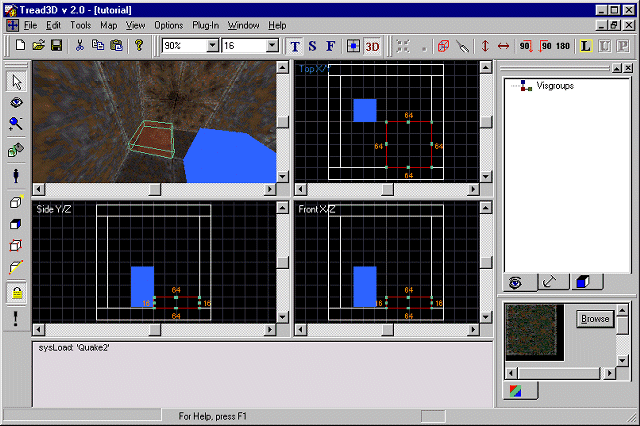
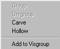
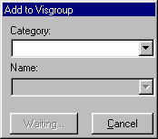
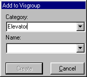
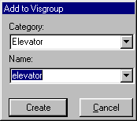
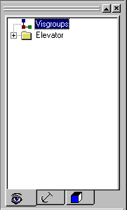
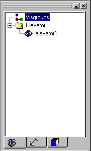
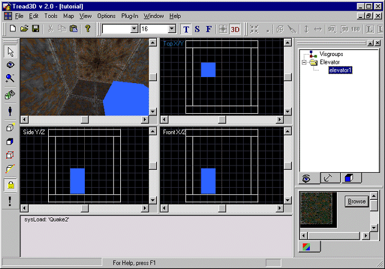
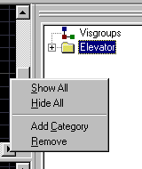

|
|
|---|
This is a walk-through as to how to use visgroup.
Before starting this tutorial you should first get acquainted with the basics of the "Tread3D" editor; the screen and the various commands that are available.
As in the previous tutorials start "Tread3D" and make a very basic hollowed brush (A room); or just open your saved file called "tutorial".
Your screen should look like the one below.

Highlight the brush we used as the elevator.
(Point and click on it)
Now "right-mouse-click" on the brush.
A new options window should appear.
Your screen should look like the one below.

Scroll down to "Add to Visgroup" and release.
A second new window appears, the "Add to Visgroup" window.
The "Add to Visgroup" window should look like the one below.

Now type in a "Category"; in this example lets use "Elevator".
You will now notice the 'Add to Visgroup" window changes.
The "Name" block is now active.
The "Add to Visgroup" window should now look like the one below.

Lets type in elevator1 as the name.
You will now notice the 'Add to Visgroup" window changes again.
The "Create" block is now active.
The "Add to Visgroup" window should now look like the one below.

Just click on the "Create" button.
You should now notice that the "Object Workspace" changes.
It now displays a directory structure showing your newly created visgroup.
The "Object Workspace" now looks like the one below.

Now if you open the Elevator folder you will now see elevator1.
The "Object Workspace" now looks like the one below.

Now if you click on the "Eye" next to elevator1 you will see the brush disappear.
Your screen should look like the one below if you click on the "Eye"

Now under the Category of "Elevator" you have only one item "elevator1" but in reality you could have an unlimited number of items. To turn a "Category" off instead of doing items individually just "right-mouse-click" in the "Object Workspace". A new options window now appears.
Your screen should look like the one below.

The options available are:
Show All This will display all items in a Visgroup in the "Editor Workspace".
Hide All This will not display all items in a Visgroup in the "Editor Workspace".
Add Category This will add a new Visgroup Category but with no items in it.
Remove This will remove a Visgroup Category but the items in the "Editor Workspace" will not be deleted.
Thats all there is to it.
Now resave your work.